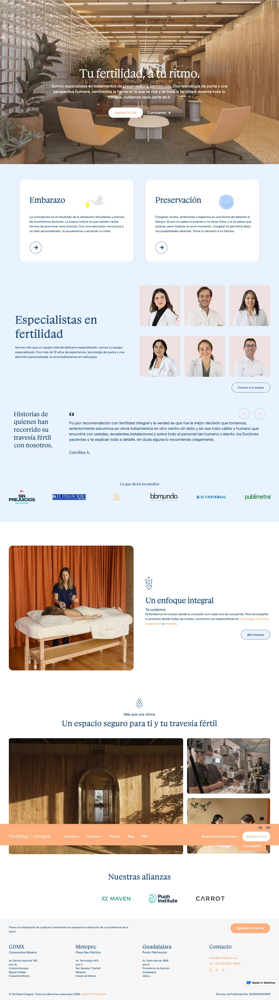
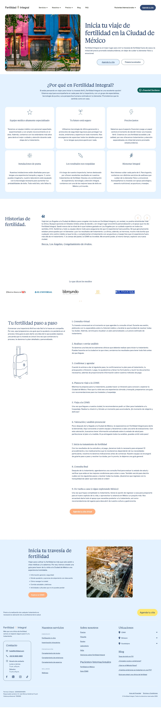
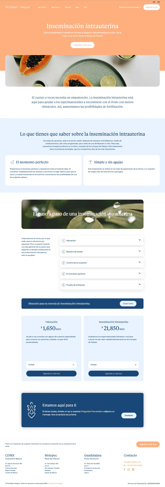
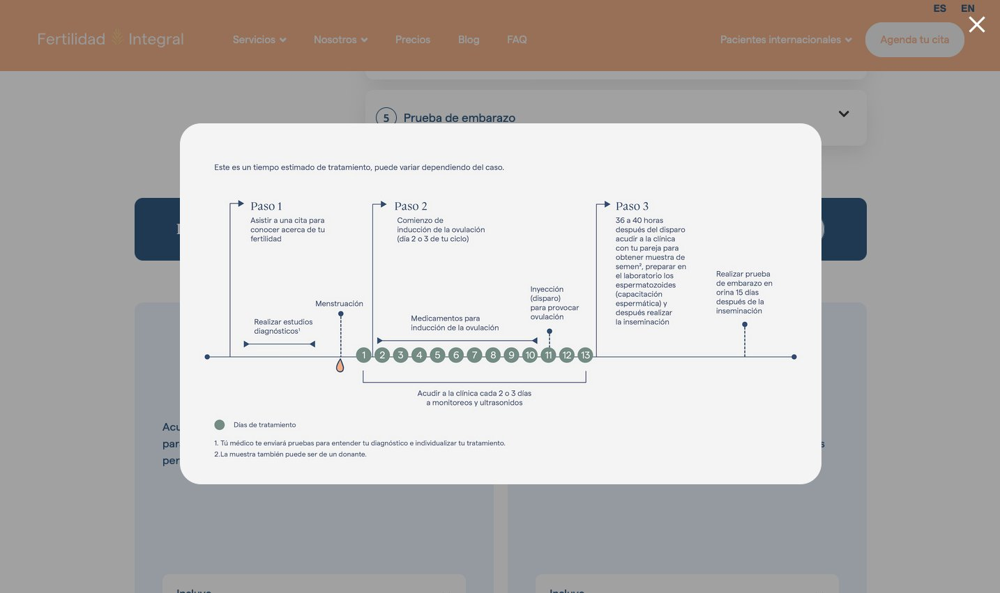

Estrategia, interfaz y adquisición de pacientes — construidos desde cero para escalar.
Fertilidad Integral es una de las clínicas de medicina reproductiva más reconocidas de México. El reto: relanzar la presencia digital en CDMX y construir desde cero el ecosistema de adquisición de pacientes para dos nuevas ciudades — Metepec y Guadalajara — con estrategias distintas para cada mercado.
Fertilidad Integral no solo necesitaba una presencia digital actualizada — necesitaba un modelo replicable que le permitiera entrar a nuevos mercados con velocidad y eficiencia. Cada ciudad tiene un perfil de paciente distinto, distintos competidores y distintos canales de búsqueda.
El punto de partida fue un rediseño completo de la interfaz y la plataforma web, incluyendo ecommerce para la venta de medicamentos y servicios. Sobre esa base construimos el ecosistema de adquisición: estrategia de medios, configuración de campañas, optimización continua de leads y el modelo que después guiaría cada nuevo lanzamiento.
Comenzamos con el rediseño total de la plataforma digital: nueva arquitectura de información, UI/UX orientado a conversión, integración de ecommerce para medicamentos y servicios de la clínica. Una plataforma pensada para el paciente, pero construida para el negocio.
Después diseñamos e implementamos la estrategia de medios para cada ciudad: buyer persona, segmentación en Google Ads y Meta Ads, landing pages de alta conversión y flujos de seguimiento de leads. El modelo creado durante el relanzamiento de CDMX se convirtió en el blueprint para Metepec y Guadalajara.
Pasa el cursor sobre cada pantalla para explorarla.



